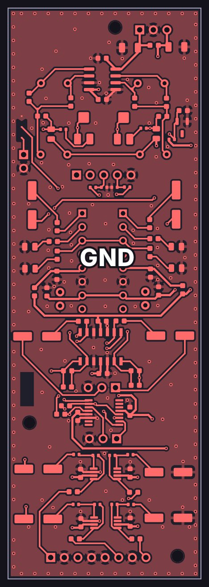
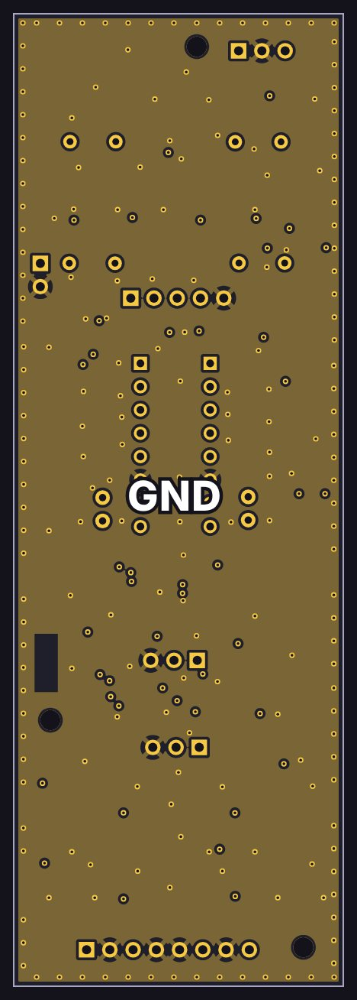
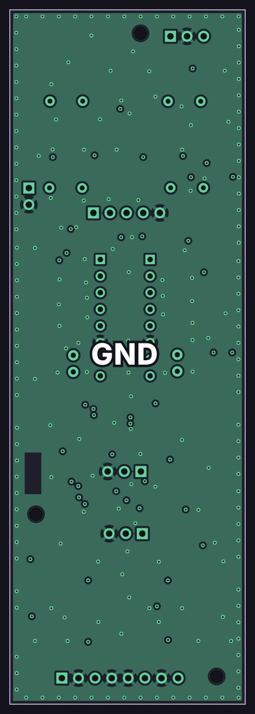
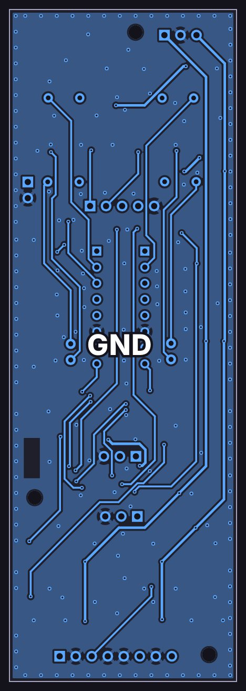
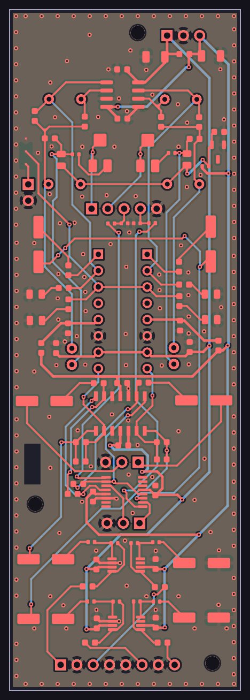

Output card

How it works
A simplified schematic: just the signal path, with the details left out. Dashed lines are control voltages from the console’s controller.
Design notes
- Two VCAs, one per side (THAT2180A on the current drawing). There’s no separate pan circuit: the firmware combines fader and pan into one gain per side, so the pan law is a firmware choice.
- The control direction is inverted: a higher DAC voltage means a quieter channel, so full scale is mute, which is also the power-up state. The range is about +12 dB down to mute.
- The compressor works through the VCAs’ second control pin (E−), so it adds to the fader and pan settings without interfering.
- Insert point: an ADG1436 picks the direct signal or the insert return, and a second logic line takes the insert send before or after the EQ.
- An OPA1637 fully differential amp drives the balanced mix bus.
- The CV buffers are MFB-filtered, temperature-compensated scalers (OPA4197, OPA2197) with an ADR5041 reference, so moves glide instead of zippering.
- System simulation caught the VCAs’ E− pins floating when no compressor card is fitted. The fix is to move that connector and bridge JP1.
The copper layers
All 4 copper layers of the board, top to bottom, drawn from the KiCad layout: 2 signal layers and 2 ground planes, labeled GND.
-

Top F.Cu
Signal layer: parts, signal traces and +15 V, −15 V, −2.5 V power traces
-

Inner 1 In1.Cu
Ground plane (GND)
-

Inner 2 In2.Cu
Ground plane (GND)
-

Bottom B.Cu
Signal layer: signal traces and +15 V, −15 V, −2.5 V power traces
-

All layers
Every copper layer stacked, top on top
See schematics